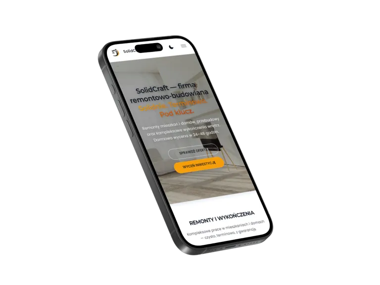
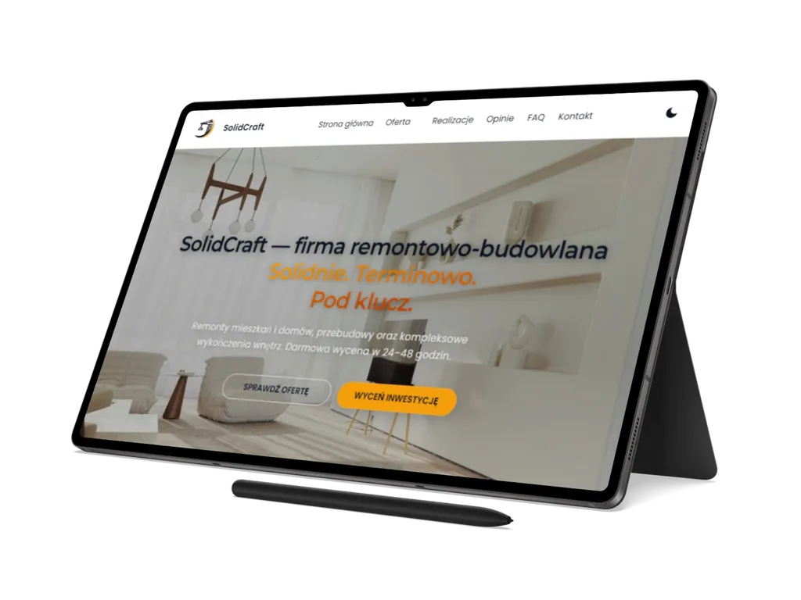
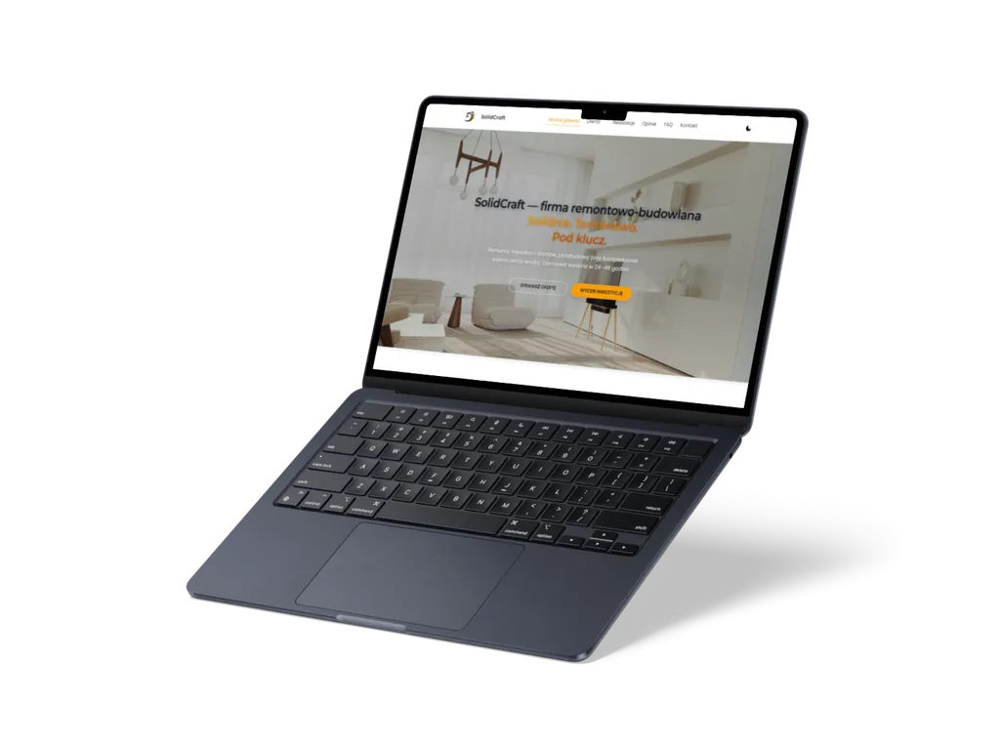

01
Solidcraft
Wielostronicowy front-end dla firmy remontowo-budowlanej, łączący czytelną ofertę, formularz kontaktowy, interakcje galerii oraz przygotowanie do statycznej publikacji.
Przegląd projektu
Solidcraft pokazuje kompletny zakres statycznego serwisu firmowego: od strony głównej i podstron usług po formularz, dokumenty prawne, tryb offline i proces publikacji.
Projekt został przygotowany jako referencyjna realizacja portfolio dla branży remontowo-budowlanej, z naciskiem na semantyczny front-end, interakcje po stronie klienta, dostępność, SEO i utrzymanie statycznego wdrożenia.
Zakres obejmuje stronę główną, podstrony ofertowe, dokumenty prawne, stronę potwierdzenia formularza oraz widoki błędów i offline. Dzięki temu Solidcraft nie jest pojedynczym landing page'em, tylko uporządkowanym, wielostronicowym serwisem firmowym.
Warstwa interakcji obejmuje formularz kontaktowy z walidacją i ochroną antyspamową, lightbox galerii/oferty obsługiwany z klawiatury, przełącznik motywu, mapę ładowaną po zgodzie użytkownika oraz Service Workera z cache'em zasobów statycznych.
Strony
Biznes
Usługi
Budownictwo
Zakres i akcenty
Case study koncentruje się na praktycznych elementach serwisu firmowego: strukturze usług, interakcjach użytkownika i standardzie technicznym wdrożenia.
02
Formularz, lightbox i interakcje
03
SEO, wydajność i offline
Technologie i standard
Solidcraft został zbudowany jako statyczny projekt HTML, CSS i JavaScript, z narzędziami wspierającymi build, optymalizację obrazów, dostępność i kontrolę jakości.
Warstwa runtime opiera się na HTML5, CSS3 z modułami scalanymi przez
@import oraz JavaScript ES Modules. Proces utrzymania obejmuje PostCSS,
esbuild, pipeline obrazów w sharp, formatowanie Prettierem i skrypty kontroli
jakości.
- modułowy front-end z nawigacją, formularzami, lightboxem i obsługą zgody mapy,
- build produkcyjny z minifikacją CSS/JS, obrazami AVIF/WebP/JPG i sitemapą,
- QA oparte o Playwright, axe-core, sprawdzanie HTML, linków i konfigurację Lighthouse CI.



Dalszy krok
Zobacz wielostronicowy serwis Solidcraft albo wróć do pełnego portfolio.
Solidcraft pokazuje zakres pracy nad statyczną stroną firmową: od struktury usług i formularza po SEO, dostępność, Service Workera, QA i przygotowanie projektu do publikacji.